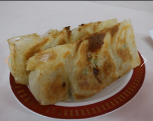

『台北』
本場のシェフがつくる点心楼のこだわりは、あっさりした味わいでハイクラスな料理をお手頃プライスで。他にもいろんなメニューが待っている。
『さんあい亭』
知る人ぞ知る名店。小ぶりの餃子はいちどたべたらファンになることまちがいなし、、らしいです。なんの飾りもない店の外観には期待しかない。
『博多餃子チャオズ』
西鉄平尾駅より徒歩3分こだわり抜いた餡に手作りの皮を使用したチャオズ自慢の餃子 をテイクアウトで。麻婆豆腐とチャーハンも美味らしい。
『東方餃子房』
いろんな餃子が楽しめ、近隣の人達に親しまれる町中華。なかでも焼き餃子は人気で、ついついな頼みすぎても圧倒的なコスパを誇る。
『ピース餃子』
小籠包を小さくしたような ルックスで唯一無二。 皮はモッチモチで肉汁どば〜の焼き餃子、辛味ダレのかかった水餃子「紅油餃子」が人気！
『池田屋』
炊き餃子で福岡に名前を轟かす名店。濃い目のスープであつあつにねべで煮込みながら食べる餃子は他では食べられない。ただし、店の横柄さに辟易する。

『餃子李』
古くから親しまれる町中華。博多の小ぶり餃子を駆逐するかのような大陸のジャンボな餃子を突けば、皮というウォールマリアが決壊し、駆逐されるのを待つばかり。
『テムジン』
博多といえば、一口餃子のテムジンというくらいだが、正直レベルは、年々落ちていき訪れるまでもない味になっている。一応書いときます。